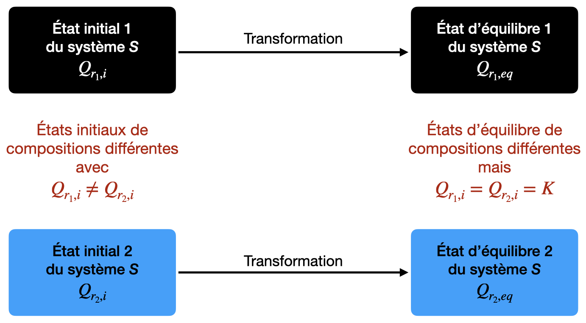

Quotient de réaction
Introduction
-
Le quotient de réaction $Q_r$ est une grandeur qui caractérise un système chimique dans un état donné.
-
L’évolution de sa valeur au cours de la transformation renseigne sur l’évolution du système chimique étudié.
Expression de $Q_r$ dans le cas de systèmes chimiques uniquement constitués d’espèces dissoutes
Soit l’équation de la réaction d’oxydation des ions thiosulfate $\ce{S2O3^{2-}}$ par le diiode $\ce{I2}$. Il se forme des ions tetrathionate $\ce{S4O6^{2-}}$ et des ions iodure $\ce{I-}$.
-
Écrire l’équation de la réaction.
-
Donner l’expression du quotient de réaction pour un état quelconque d’une transformation modélisée par la réaction étudiée.
Réponses
-
\ce{ I2 (aq) + 2 S2O3^{2-} (aq) <=> 2 I- (aq) + S4O6^{2-} (aq) } $$
-
Q_r = \dfrac{\left( \dfrac{[\ce{I-}]}{C^o} \right)^2 \cdot \left( \dfrac{[\ce{S4O6^{2-}}]}{C^o} \right)}{\left( \dfrac{[\ce{I2}]}{C^o} \right) \cdot \left( \dfrac{[\ce{S2O3^{2-}}]}{C^o} \right)^2} $$ soit $$ Q_r = \dfrac{[\ce{I-}]^2 \cdot [\ce{S4O6^{2-}}]}{[\ce{I2}] \cdot [\ce{S2O3^{2-}}]^2} $$
Soit la réaction acide-base entre l’acide éthanoïque et l’eau.
-
Écrire l’équation de la réaction.
-
Donner l’expression du quotient de réaction pour un état quelconque d’une transformation modélisée par la réaction étudiée.
Réponses
-
\ce{CH3CO2H (aq) + H2O <=> CH3CO2- (aq) + H3O+} $$
-
Q_r = \dfrac{\left( \dfrac{[\ce{CH3CO2-}]}{C^o} \right) \cdot \left( \dfrac{[\ce{H3O+}]}{C^o} \right)}{\left( \dfrac{[\ce{CH3CO2H}]}{C^o} \right)} $$ soit $$ Q_r = \dfrac{[\ce{CH3CO2-}] \cdot [\ce{H3O+}]}{[\ce{CH3CO2H}] \cdot C^o} $$
-
L’eau, si c’est le solvant, ne doit pas apparaître dans l’écriture du quotient de réaction.
-
Dans le cas des réactions d’estérification l’eau est un produit de la réaction qui ne se fait pas en solution aqueuse. L’eau doit alors intervenir dans le quotient de réaction.
L’expression de $Q_r$ dépend-elle du sens d’écriture de l’équation de la réaction ?
On introduit dans un bécher de l’acide méthanoïque, des ions méthanoate, de l’acide éthanoïque et des ions éthanoate dilués. Le système ainsi formé est le siège d’une réaction chimique qui conduit à un état d’équilibre.
-
Écrire les deux équations chimiques symbolisant la réaction chimique.
-
Déterminer pour chacune de ces équations l’expression du quotient de réaction (les noter $Q_{r,1}$ et $Q_{r,2}$).
-
Quelle relation existe-t-il entre $Q_{r,1}$ et $Q_{r,2}$ ?
Expression de $Q_r$ dans le cas de systèmes chimiques comportant des solides
Soit la réaction d’oxydoréduction du cuivre $\ce{Cu}$ avec les ions argent I $\ce{Ag+}$. Il se forme du cuivre II $\ce{Cu^{2+}}$ et de l’argent $\ce{Ag}$.
-
Écrire l’équation de la réaction chimique.
-
Donner l’expression du quotient de réaction pour un état quelconque d’une transformation chimique modélisée par cette réaction.
Réponses
-
\ce{ Cu (s) + 2 Ag^+ (aq) <=> Cu^{2+} (aq) + 2 Ag (s) } $$
-
Q_r = \dfrac{\left( \dfrac{[\ce{Cu^{2+}}]}{C^o} \right) }{\left( \dfrac{[\ce{Ag+}]}{C^o} \right)^2} $$ soit $$ Q_r = \dfrac{[\ce{Cu^{2+}}] \cdot C^o}{ [\ce{Ag+}]^2} $$
Soit la réaction de précipitation entre les ions fer III $\ce{Fe^{3+}}$ et les ions hydroxyde $\ce{OH^-}$ en solution aqueuse. Il se forme de l’hydroxyde de fer III.
-
Écrire l’équation de la réaction chimique.
-
Donner l’expression du quotient de réaction pour un état quelconque d’une transformation chimique modélisée par cette réaction.
Réponses
-
\ce{ Fe^{3+} (aq) + 3 OH^- (aq) <=> Fe(OH)3 (s) } $$
-
Q_r = \dfrac{1}{\left( \dfrac{[\ce{OH^-}]}{C^o} \right)^3 \cdot \left( \dfrac{[\ce{Fe^{3+}}]}{C^o} \right)} $$ soit $$ Q_r = \dfrac{C^{o4}}{[\ce{OH^-}]^3 \cdot [\ce{Fe^{3+}}]} $$
Soit la réaction de précipitation du phosphate de calcium $\ce{Ca3(PO4)2}$ en solution aqueuse à partir des ions calcium $\ce{Ca^{2+}}$ et phosphate $\ce{PO4^{3-}}$.
-
Écrire l’équation de la réaction chimique.
-
Donner l’expression du quotient de réaction pour un état quelconque d’une transformation chimique modélisée par cette réaction.
Réponses
-
\ce{ 3 Ca^{2+} (aq) + 2 PO4^{3-} (aq) <=> Ca3(PO4)2 (s) } $$
-
Q_r = \dfrac{1}{\left( \dfrac{[\ce{Ca^{2+}}]}{C^o} \right)^3 \cdot \left( \dfrac{[\ce{PO4^{3-}}]}{C^o} \right)^2} $$ soit $$ Q_r = \dfrac{C^{o5}}{[\ce{Ca^{2+}}]^3 \cdot [\ce{PO4^{3-}}]^2} $$
Quotient de réaction et avancement de de la réaction
On considère une transformation chimique modélisée par la réaction entre l’acide benzoïque et les ions éthanoate en solution aqueuse.
On introduit $\pu{10,0 mmol}$ d’acide benzoïque et $\pu{20,0 mmol}$ d’ions éthanoate dans l’état initial.
- Établir le tableau d’évolution de ce système.
- Donner l’expression du quotient de réaction pour un état quelconque.
- Exprimer ce quotient de réaction en fonction de $x$, avancement de la réaction.
- Quelles sont les valeurs du quotient de réaction pour $\pu{x = 2,0 mmol}$ et $\pu{x = 4,0 mmol}$ ?
Réponses
Quotient de réaction dans l’état d’équilibre : constante d’équilibre
Que vaut le quotient de réaction lorsque l’état d’équilibre est atteint ?
La valeur de $Q_{r}$ à l’équilibre dépend-elle de l’état initial ?
Soit la réaction entre l’acide éthanoïque et l’eau d’équation : $$ \ce{CH3CO2H (aq) + H2O <=> CH3CO2^- (aq) + H3O+ (aq)} $$ On mesure les conductivités de deux solutions d’acide éthanoïque :
| $C (\pu{mol.L-1})$ | $\sigma (\pu{mS.m-1})$ | |
|---|---|---|
| $S_1$ | $\pu{5,0e-2}$ | 0,343 |
| $S_2$ | $\pu{5,0e-3}$ | 0,107 |
- Données
- $\lambda_{\ce{CH3CO2^-}} = \pu{4,09 mS.m2.mol-1}$, $\lambda_{\ce{H3O^+}} = \pu{35,0 mS.m2.mol-1}$
-
Pour la solution $S_{1}$, dans l’état d’équilibre :
-
Quelles sont les concentrations molaires de ces ions ?
-
Quelle est la concentration molaire en acide éthanoïque ?
-
Quelle est la valeur du quotient de réaction ?
-
-
Reprendre les mêmes questions pour la solution $S_{2}$ et conclure.
Réponse
Constante d’équilibre
-
Dans l'état d’équilibre d’un système, le quotient de réaction, $Q_{r,eq}$, prend une valeur indépendante de la composition initiale du système.
-
À chaque équation de réaction est associée une constante appelée constante d’équilibre et notée $K$ dont la valeur ne dépend que de la température.
-
Dans l’état d’équilibre : $$ Q_{r,eq} = K $$
-
Pour une réaction en solution aqueuse d’équation, $$ \ce{ \alpha A (aq) + \beta B (aq) <=> \gamma C (aq) + \delta D (aq) } $$ la constante d’équilibre $K$ s’écrit : $$ K = \dfrac{\left( \dfrac{[{C}]}{C^o} \right)^\gamma \cdot \left( \dfrac{[{D}]}{C^o} \right)^\delta}{\left( \dfrac{[{A}]}{C^o} \right)^\alpha \cdot \left( \dfrac{[{B}]}{C^o} \right)^\beta} $$
Le taux d’avancement final dépend-il de la valeur de la constante d’équilibre ?
On mesure les conductivités $\sigma_{1} = \pu{343 \mu S.cm-1}$ et $\sigma_{2} = \pu{1129 \mu S.cm-1}$ de deux solutions $S_{1}$ d’acide éthanoïque et $S_{2}$ d’acide méthanoïque de même concentration apportée $C = \pu{5,0e-2 mol.L-1}$.
- Données
- Acide méthanoïque et eau : $K = \pu{1,6e-4}$ ;
- Acide éthanoïque et eau : $K = \pu{1,6e-5}$.
-
Quelles sont les concentrations des espèces ioniques dans ces deux solutions ?
-
Quelle est, dans chaque cas, la valeur du taux d’avancement final ? Conclure.
Réponses
Le taux d’avancement final dépend-il de la constitution de l’état initial ?
On mesure les conductivités de diverses solutions d’acide éthanoïque de concentration apportée $C$ :
| $C (\pu{mol.L-1})$ | $\sigma (\pu{mS.cm-1})$ |
|---|---|
| $\pu{5,0e-2}$ | 0,343 |
| $\pu{1,0e-2}$ | 0,153 |
| $\pu{5,0e-3}$ | 0,107 |
Que vaut le taux d’avancement final de ces solutions ? Conclure.
Réponses
À retenir
-
Dans l’état d’équilibre d’un système, le quotient de réaction, $Q_{r,eq}$, prend une valeur indépendante de la composition initiale.
-
À chaque équation de réaction est associée une constante, appelée constante d’équilibre, dont la valeur ne dépend que de la température.
-
Dans l’état d’équilibre : $$Q_{r,eq} = K$$
Pour deux transformations chimiques différentes mais modélisées par la même réaction chimique : 